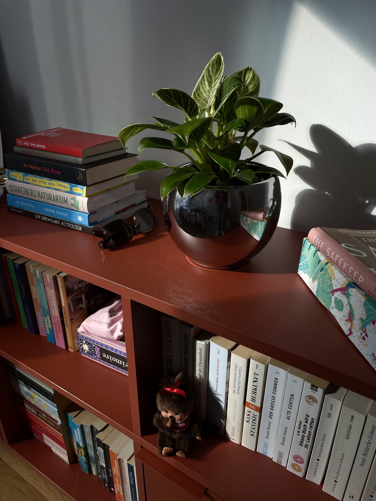

was ich zuletzt gelesen habe
von mara am dienstag, 16. juni 2026

Die Wand - Marlen Haushofer
Dieses Buch ist fantastisch. Zuerst habe ich mich nicht getraut es zu lesen, denn die Leute im Internet sagen „Es wird dein Leben verändern“. Das hielt ich für große Worte, war trotzdem eingeschüchtert und erwartete eine eher schockierende Geschichte. Dann fand ich es im besten Verschenkeschrank im Rewe (da bring ich ja auch manchmal meine eigenen Bücher hin) und sah es als glücklichen Zufall (kairos sozusagen). Ich schlug es freudig in Folie ein, so wie es einem früher bei Schulbüchern verboten war. Sobald ich angefangen hatte zu lesen, konnte ich nicht mehr damit aufhören und steckte zu jeder sich bietenden Gelegenheit die Nase hinein. Erst nach einem Drittel des Buchs fiel mir auf, dass es weder Kapitel noch Absätze gibt und ich evtl. deshalb nicht aufhören konnte. Optimal ließ es sich im Hängesessel bei den Hühnern lesen, auch wenn im Buch (leider!) kein Huhn vorkommt. Über die Handlung will ich gar nicht viel verraten: eine Frau wacht in einem Jagdhaus in den Bergen auf und plötzlich ist zwischen diesem Ort und der restlichen Welt eine undurchdringbare Wand. Von da an beschreibt sie ihr Leben und ihre Gedanken in dieser Gegend sehr realistisch und ehrlich und ohne jeden Filter.
Ich hab dieses Buch schon allen Menschen empfohlen, die ich seit Beenden getroffen habe, aber ich mache es direkt nochmal! Lest dieses Buch, es wird vielleicht euer Leben verändern.
Demon Copperhead - Barbara Kingsolver
Dazu kann ich gar nicht so viel sagen. Ich hatte beim Lesen eine relativ gute Zeit, trotz harter Themen und Sprache, weil immer ein Hoffnungsschimmer zu finden war. Die 800 Seiten waren auch gar nicht schlimm. Es war insgesamt eine gute Geschichte, es ist viel passiert und erinnert ein bisschen an Distelfink. Daran denke ich aber vermutlich häufiger zurück als ich es hier tun werde. Das liegt auch daran, dass ich meine Ausgabe vom Distelfink seit langem suche. Wer sie hat, kann ein Kommentar schreiben oder eine Mail ob der Schmach!!
Rückkehr nach Budapest - Nikoletta Kiss
Bei diesem Buch habe ich ein Experiment gemacht. Ich war in der Buchhandlung und wollte ein Buch kaufen, das ich weder auf Social Media oder in der Zeitung oder sonst auf irgendeinen Weg gesehen oder empfohlen bekomme habe. Leider weiß ich nämlich nicht mehr, wann das zuletzt passiert ist und ich mich einfach vor Ort zum Kauf entschieden habe, ohne eine Meinung von anderen zu kennen.
Dann ist es dieses geworden und ich habe mir eine Stimmung wie in „Die hellen Tage“ von Zsuzska Bank erhofft (hammer Buch) und war gleichzeitig sehnsüchtig nach Budapest im Sommer. Das letztere hat ein bisschen geklappt, sonst war ich aber nur mittel begeistert. Ich kann es also nicht wirklich empfehlen und auch gar nicht so viel zum Inhalt sagen, außer dass es sehr viel Hin und Her war und allzu viel Drama um einen Mann, der mir relativ mittelmäßig erschien. Bald werde ich nochmal das gleiche Experiment starten.
Good Girl - Aria Aber
tbd, war ok soweit
Die Liebe an miesen Tagen - Ewald Arenz
Das war so ein Quatsch, ich gebe maximal 1,5 von 5 Sternchen. Gefunden hab ich das Buch auf Teneriffa als einziges deutsches Buch im Verschenkeschrank. Ich las es zornig an einem einzigen Tag aus (das klingt zwar gut, es war aber auch mein Rückflug und ich hatte Langeweile und kein weiteres Buch zur Hand). Die Geschichte war super klischeehaft und die Charaktere sooo nervig! Die Frau als Love Interest hatte keine Freundinnen, was sie irgendwie als charmant darstellen sollte, aber das kann es ja nicht sein. Schon lange war ich nicht mehr so zornig nach einem Buch, denn dann sprach mich ein Mann am Flughafen an und ich sagte „ne sorry ich hab gerade echt keinen Nerv“ und rückblickend stammte meine Unfreundlichkeit zu 50% aus der schlechten Lektüre. Zu 50% aber auch aus mir selbst, also kein Grund für ein schlechtes Gewissen!
Ohne mich - Esther Schüttpelz
Das war einfach super! Gerne hätte ich noch 200 Seiten weitergelesen, es war locker und nah und lustig und relatable und außerdem die Geschichte meines bisherigen Lebenstraums: geschieden vor 28.
Ich freue mich ganz arg auf „Anton und Alma“ von Dana Vowinckel, das erscheint im September und hat mehr als 500 Seiten. Geil, dann lohnt sogar Hardcover. Zum Glück habe ich einen geheimen Trick angewandt (Kaufalarm bei Rebuy) und bekomme das Buch daher schon voraussichtlich Ende dieser Woche und bin in heller Aufruhr! Auf bald xx